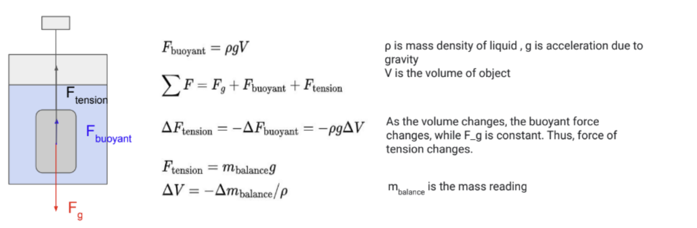

Dates: May 2022 – August 2022
Team: Battery Research & Development
Focus: Design and fabrication of test fixtures and instrumentation for battery cells
Note: I signed a non-disclosure agreement with Chemix Battery. Detailed specifications, test results, and proprietary design information have been omitted from this page. The descriptions below reflect general methodology and my engineering contributions only.
At Chemix Battery, I was a mechanical engineering intern on the Battery R/&D team. I designed and built test infrastructure used to characterize battery cell performance. Projects spanned thermal management, gas generation measurement, CAD design, and materials testing. Each project involved the full design-build-test loop: identifying the measurement need, selecting an approach, fabricating or assembling hardware, and validating output against known references.
During formation cycling, some pouch cells can produce gas as a byproduct of chemical reactions at the electrodes. Because pouch cells are sealed, generated gas causes the cell to swell, which can damage device components and raise safety concerns. The goal of this project was to measure gas generation during cycling rather than relying on before/after mass comparisons alone.
The measurement approach leverages Archimedes' Principle (buoyant force acting on a submerged object equals the weight of the fluid it displaces). By suspending a pouch cell from a load cell while it is submerged in liquid, any change in the cell's volume changes the buoyant force, which in turn changes the tension measured at the load cell:

As the cell swells, buoyant force increases, tension at the load cell decreases, and the load cell reading changes proportionally. This allows continuous, real-time volume tracking throughout a charge/discharge cycle.
I built a frame that sat inside a temperature-controlled incubator. The pouch cell was suspended via thin wire from the load cell, submerged in silicone oil. This was chosen for its low vapor pressure, electrical insulating properties, and thermal stability. Nickel tabs were spot-welded onto the cells to make electrical connections for cycling. A Python script I wrote logged the load cell output and converted it to a volume-vs-time trace, exporting both a CSV and a plot. To validate the setup, I compared in-situ volume readings against direct mass measurements of cells taken before and after cycling.
Battery cells in real-world applications are actively cooled, which affects their electrochemical performance. Cycling cells without active thermal management causes them to run hotter than they would in a device, making lab performance data less representative of field conditions. The goal was to build a system that could cool cells to a set target temperature during cycling and maintain it, enabling more realistic performance characterization. We would also be able to use this to test cell performance in optimal temperature conditions.
I researched cooling approaches used in industry and settled on direct cooling. I made three designs to test and compare:
I built a pump-tank-radiator fluid circuit that connected to each of the three cooling configurations. Six 21700 cylindrical cells were cycled simultaneously across the setups (two cells per configuration). Thermocouples were attached to each cell to monitor temperature in real time. The comparison metric was how quickly and precisely each configuration brought cells to the target temperature and held them there.
The copper coil configuration ended up being chosen due to better thermal conductivity allowing the cell to stabilize at target temperature faster and being easy to mass produce (used the same setup used to make BFR's torsion springs)
Cylindrical cells being cycled in incubators needed to be held securely in place during testing. The existing arrangement was spatially inefficient, limiting how many cells could be tested simultaneously. Off the shelf holders were not universal for all the cylindrical cell sizes we used, nor were they reliable (contact slip issues). The goal was to design holders that improved packing density while maintaining reliable mechanical support.
The redesigned holders increased usable space efficiency in incubators by 350%, allowing significantly more cells to be cycled concurrently. The design also provided stable support to prevent movement or shorting during cycling.
Mechanical design /& fabrication • CAD (SolidWorks) • Instrumentation /& measurement systems • Python • Thermal cooling system design • Fluid system assembly • Fitting selection /& plumbing • Experimental validation • Fixture design • Battery cell /& electrochemistry fundamentals
Email: jennifersili@berkeley.edu
LinkedIn: linkedin.com/in/jennifersili